Pentru a dezvolta o aplicatie avem nevoie de diverse constante sau variabile. Constantele si variabilele au diverse
tipuri de date. In LabVIEW sunt utilizate atat constante cat si variabile, avand o serie de tipuri de date.
Tipurile de baza sunt:
String
Numeric
Intreg cu semn - Signed integers (8-16-32-64 biti)
Intreg fara semn - Unsigned integers (8-16-32-64 biti)
Virgula mobila - Floating point ( single, double, extended)
Numar complex in virgula mobila - Complex floating point ( single, double, extended)
Boolean
Forma de unda - Waveform
Cale - Path
Enum
Cluster
Numeric
Diverse tipuri Mixed data
Matrice - Array
1D
2D
Imagine - Picture
Variant
Reference Application Reference Number
Toate tipurile de date enumerate mai sus pot fi utilizate si plasate pe Block Diagram. Fiecare tip de data
are o reprezentare grafica sub forma de Icon sau de Terminal . Reprezentarea sub forma de Icon este mai sugestiva
insa are o dimensiune mai mare, pe cand reprezentarea sub forma de Terminal este mai restransa si ocupa mai putin loc in cadrul
aplicatiei schitate in Block Diagram. In continuare sunt prezentate principalele reprezentari sub forma de Terminal ale diverselor
tipuri de date Data type terminals
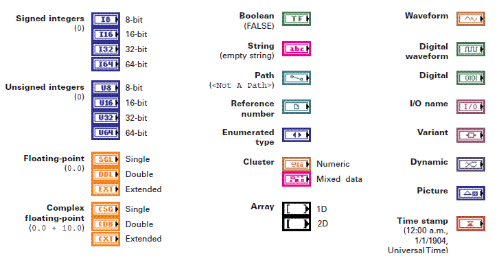
Constante utilizate în LabVIEW
In majoritatea aplicatiilor LabVIEW sunt utilizate diverse Controale sau functii carora trebuie sa le setam valorile
implicite. In aceste cazuri sunt utilizate constante de diverse tipuri.
Pentru inceput vom utiliza cele mai simple constante, si anume constante de tip string sau numeric. Urmatoarele tipuri
de date vor fi studiate mai tarziu pe masura ce se vor introduce notiuni noi de tipul Array, Cluster etc.
Constante de tip "String"
Tipul de date String este des utilizat in aplicatiile LabVIEW atat pentru a afisa diverse mesaje pe
parcursul aplicatiei cat si pentru a codifica diverse structuri de date in format text.
Prima aplicatie realizata va scrie textul "Bine ati venit!" intr-un Front Panel de genul celui de jos.
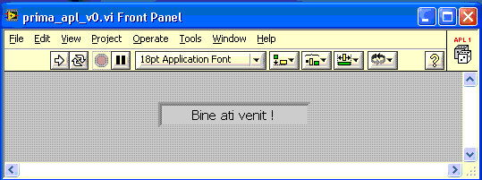
Se va deschide un Blank VI. Cu click dreapta pe Front Panel, aleg String & Pats apoi String Indicator,
se va plasa un indicator de tip text pe Front Panel. Din Meniul principal de pe Front Panel aleg File -- Save si salvez cu numele prima_apl_v0 .
Tot din Meniul principal de pe Front Panel aleg Windows apoi Show Block Diagram. Se va deschide astfel
Block Diagram-ul corespunzator Front Panel-ului creat. Pe Block Diagram va exista deja un Terminal de tip string
corespunzator indicatorului plasat pe Front Panel. Cu click dreapta pe Block Diagram aleg String apoi String Constant,
plasez astfel un terminal de tip Constant String.
Din Meniul principal de pe Front Panel aleg View apoi Tools Palette, pentru a afisa fereastra Tools Palette.
Din Tools Palette selectez Connect Wire.
Cu unealta Connect Wire selectata, putem conecta terminalul de tip Constant String cu Terminal de tip string.
Din Tools Palette se selecteaza Operate Value si se modifica valoarea terminalul de tip Constant String in "Bine ati Venit".
In acest moment Block Diagram arata astfel:
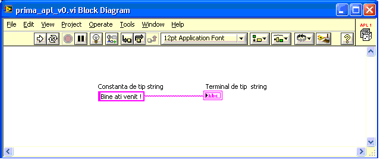
Cu click dreapta pe Terminal de tip string aleg View as Icon , obtinem:
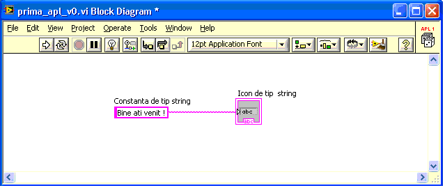
Vom reveni in fereastra Front Panel si vom apasa butonul incercuit mai jos pentru a rula aplicatia:
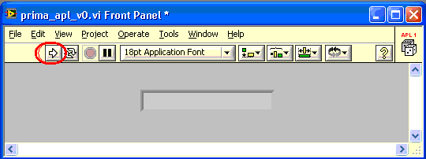
In urma rularii aplicatiei obtinem:
Vom folosi in continuare elemente de decor si elemente de tip text pentru a introduce elemente de decor si
texte explicative despre aplicatie. Pentru a scrie diverse texte pe Front Panel se va folosi Edit Text din Tools iar pentru
elemente decorative vom folosi Click dreapta pe Front Panel si se alege Decorations.
Vom obtine un Front Panel mai prietenos de genul:
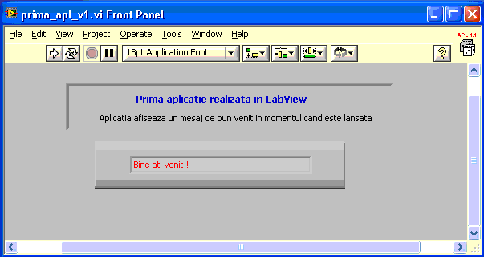
Constante de tip "Numere intregi"
Tipul de date Numeric Este foarte des utilizat in aplicatiile LabView. Vom realiza o aplicatie similara cu
aplicatiile anterioare numai ca de data aceasta vom afisa o constanta numerica in momentul in care este rulata aplicatia. Sa afisam deci valoarea 789
in momentul rularii aplicatiei. Pentru aceasta vom plasa pe Front Panel un Numeric Indicator iar pe Block Diagram vom plasa o
constanta de tip Numeric Constant pe care o legam la Terminalul de tip Numeric astfel:
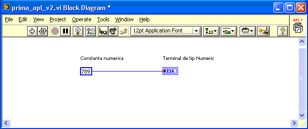
Dupa cum se vede pentru Terminalul de tip Numeric am ales tipul I16 astfel: Click dreapta -- Properties --Data Type -I16
Rulam aplicatia si obtinem:
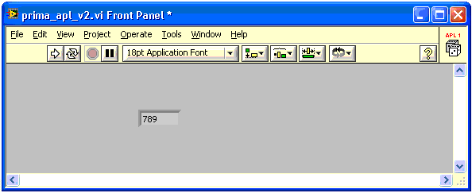
Constantele numerice sunt foarte des utilizate pentru a seta o serie de parametri pentru diverse functii si controale
utilizate in aplicatiile LabView. Sa presupunem ca vrem sa afisam doua texte pe ecran dar la interval de 500 ms. Va trebui sa folosim deci un element
caruia sa-i putem seta parametrul delay la 500. Vom crea deci un Front Panel asemanator cu:
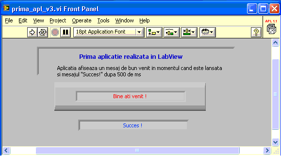
Pe Block Diagram-ul vom plasa o structura secventiala de tipul: Stacked Sequence Structure in care vom
plasa un obiect de tip Timing -- Wait(ms). Acestui obiect trebuie sa-i setam parametrul "milisecond to wait" la 500. Vom plasa deci o constanta de tip intreg pe care o
setam la 500 si o conectam la obiectul Timing asemanator cu diagrama de jos:
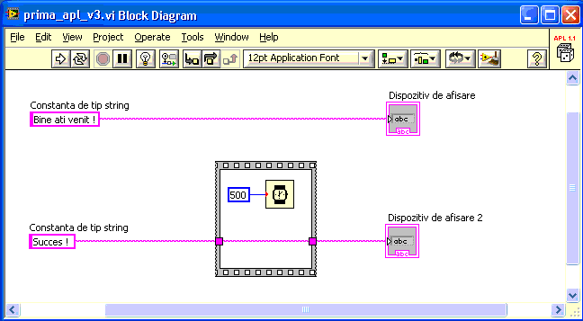
Constante de tip "Numere reale"
Tipul de date Numere reale pot fi reprezentate in precizie simpla (Single) in dubla precizie (Double) sau in
mod extins (Extendid). Vom alege reprezentarea Double pentru a afisa constanta pi
Aplicatia este foarte asemanatoare cu aplicatia pentru afisarea unei constante de tip intreg, cu deosebirea ca vom alege
-- Properties --Data Type -DBL atat pentru constanta de tip numeric cat si pentru Terminalul de tip numeric conform Block Diagram-ei de jos.
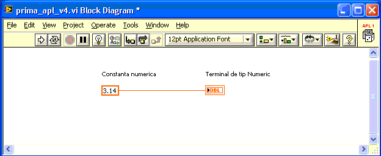
Dupa rularea aplicatiei Front Panel-ul arata astfel:
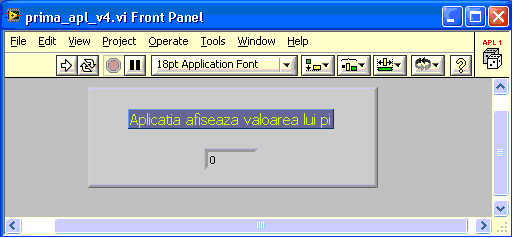
Variabile utilizate în labVIEW
Spre deosebire de constante, variabilele isi schima valoare pe parcursul rularii programelor. Pentru a defini o
variabila in LabVIEW trebuie sa plasam un Control pe Front Panel. Tipul Control-ului determina tipul variabilei. In cazul in care nu vrem
sa se vada Controlul pe Front Panel, el fiind folosit exclusiv drept variabila, se alege optiunea Hide Control din Block Disgrsm.
Variabile de tip "String"
Vom realiza o aplicatie numita var_string care foloseste un Control pentru introducerea unui text
si un Control pentru afisarea acestuia.
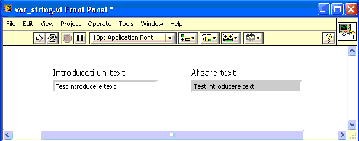
Diagrama bloc fiind extrem de simpla:
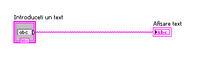
Variabile de tip "Numeric"
Vom realiza o aplicatie numita var_num_v0
care foloseste un Control pentru introducerea unui variabile numerice si un Control pentru afisarea acestei valori.
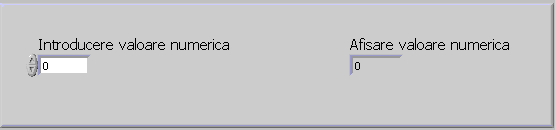
Diagrama bloc fiind extrem de simpla si se poate vedea mai jos:
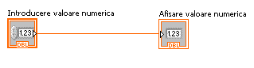
Rularea se poate face simplu sau Continuously . In primul caz dupa fiecare modificare a Controlului
de introducere trebuie rulata aplicaria. In cel de-al doilea caz orice modificare se va vedea in Controlul pentru afisare.
Vom realiza crea o noua aplicatie ceva mai spectaculoasa numita var_num_v1
care se bazeaza pe aplixatia anterioara numai ca vom folosi un Knob prin intermediul caruia vom introduce valoarea variabilei numerice.
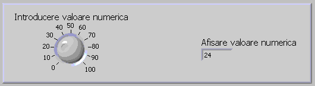
Putem dezvolta in continuare aplicatia realizand noua aplicatie numita var_num_v2
in care si afisarea variabilei se va face prin intermediul unui Orizontal Poiner Slide obtinand:
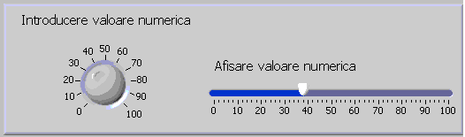
In cazul rularii continue, ar fi interesanta afisarea valorilor intr-un grafic de forma:
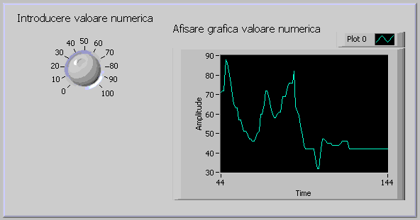
O simpla inlocuire a Orizontal Poiner Slide cu Waveform Chart nu rezolva complet problema pentru ca va trebui introdusa
o intarziere in caz contrar pe grafic sunt afisate putine puncte. Rezulta deci o noua aplicatie numita var_num_v3
carei diagrama bloc o puteti vedea mai jos.
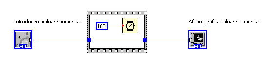
Operatii cu variabile
Cu variabilele stabilite intr-o aplicatie, se pot realiza diverse operatii in functie de necesitatile aplicatiei.
Pentru fiecare operatie exista cate un simbol specific. Toate simbolurile pentru operatii sunt grupate in categoria Functions -- Numeric .
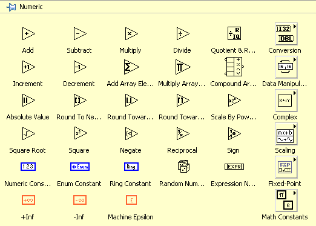
Operatii aritmetice
Sa realizam o aplicatie op_num_v0 care permite introducerea a doua numere si afiseaza produsul acestora. Front Panel-ul
aplicatiei este similar cu:
Dupa cum se observa in Block Diagram s-a utilizat simbolul Multilpy pentru a inmulti cele doua numere.
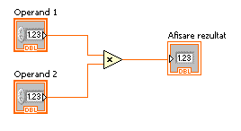
Functia random
Vom folosi in continuare generatorul de numere aleatoare pentru a realiza aplicatia urmatoare
op_num_v1
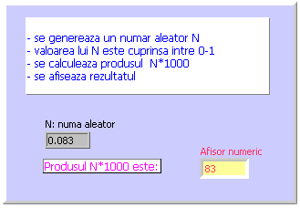
Generatorul de numere aleatoare genereaza un numar aleator intre 0 si 1. Pentru a afisa numere intre 0 si 1000 trebuie sa
inmultim numarul generat cu 1000 conform schemei:
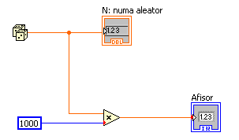
Dupa cum se observa, linia care pleaca din generatorul de numere aleatoare este de culoare rosie, semnificand un numar
de tip double, pa cand linia ce pleaca din constanta 1000 este albastra, semnificand un numar intreg. Produsul celor doua numere, este un numar de tip
double, deci iesirea din multiplicator este de culoare rosie.
Am putea imbunatati aplicatia si sa creem o noua aplicatie op_num_v2 : in care sa afisam rezultatul si pe un afisor
de tip Meter.
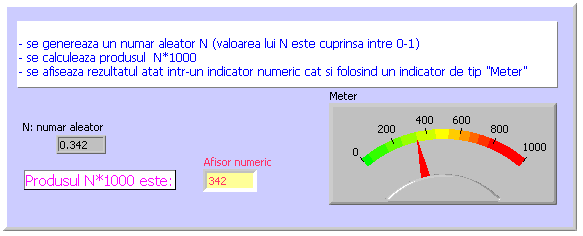
In diagrama bloc s-a mai adaugat o conexiune spre terminalul de tip Meter.
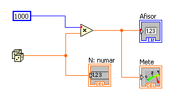
Daca vrem sa rulam aplicatia in mod continuu observam ca se schimba prea repede afisajul si nu il putem urmari. Trebuie
sa introducem o temporizare de 500 ms, realizand astfel aplicatia op_num_v3 :
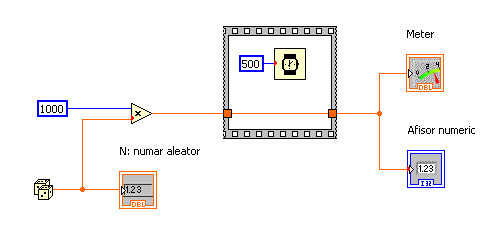
Inlocuind terminalul de tip Meter cu terminalul de tip Waveform Chart, obtinem aplicatia
op_num_v4
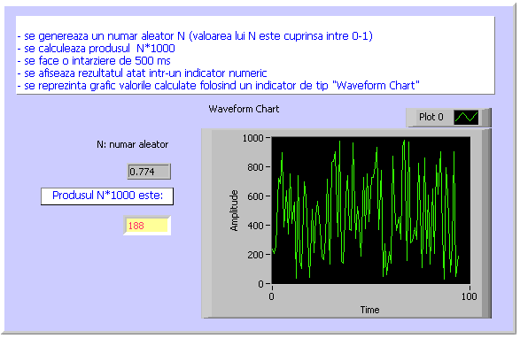
Sa presupunem ca vrem sa masuram puterea electrica consumata si realizam Front Panel de genul aplicatiei
op_num_v5 din imaginea de jos:
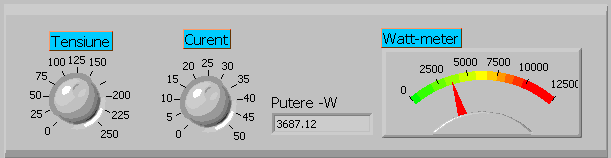
Pentru a afisa puterea trebuie sa inmultim tensiunea si curentul conform diagramei bloc de mai jos.
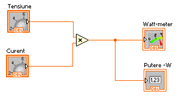
Pe indicatorul analogic se afiseaza de obicei valorile exprimate in Kw. Vom realiza aplicatia
op_num_v6 in care vom imparti deci valoarea in watt
cu 1000 pentru a o putea afisa in Kw, diagrama bloc devenind:
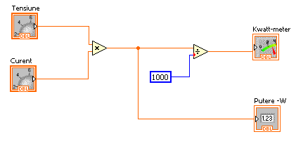
Functii matematice
Functiile matematice sunt grupate in Functions-->Mathematics
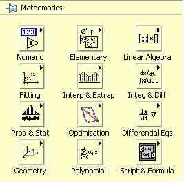
Vom folosi functia sinus si cosinus din cadrul functiilor Elementary-->Trigonometric pentru a calcula puterea activa si reactiva in curent alternativ.
In curent alternativ lucrurile se complica putin, fiind necesara introducerea unei noi marimi numita defazaj, reprezentand unghiul de defazaj dintre
curent si tensiune. Realizam in continuare aplicatia op_num_v7 pentru a simula masurarea energiei active, reactive si aparente.
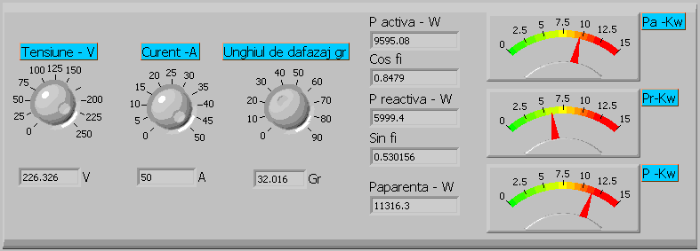
In diagrama bloc se observa folosirea functiilor trigonometrice sin si cos.
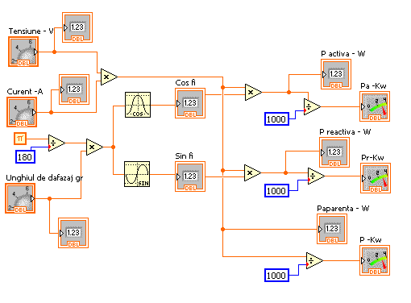
Pentru a calcula sinusul si cosinusul defazajului, va trebui sa converim unghiul in radiani si dupa aceea sa calculam sin si cos.
Operatii pe biti
Operatiile la nivel de bit sunt extrem de importante avand in vedere faptul ca acest mediu de programare este potrivit pentru
interfatarea cu diverse sisteme tehnologice in care sunt necesare comenzi digitale.
Conversia zecimal-binar
Pentru inceput sa realizam o aplicatie care sa converteasca un numar intreg U8 (unsigned integer 8 biti) in binar.
Conversia din baza 10 in baza 2 se face prin impartiri repetate la 2 pana se ajunge la catul 0. Resturile rezultate, luate in ordine inversa reprezinta valorile bitilor
in binar. Aplicatia op_biti_v1 implementeaza in LabVIEW acest algoritm.
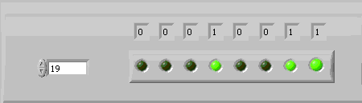
Dupa cum se poate usor observa in diagrama bloc, conversia se face prin impartiri repetate realizate de functia "Quotient & Remainder" Plasata in grupul:
Mathematics-->Numeric.
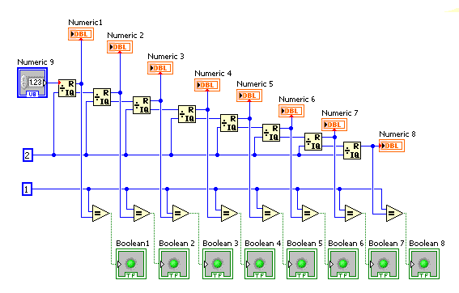
Resturile au fost afisate in ordine inversa in controale de tip numeric si totodata intr-un control bolean de tip led.
Resturile calculate desi au valoarea 1 sau 0 ele sunt numere intregi nu booleene. Nu exista functie care sa converteasca un numar
intre 0 si 1 intr-o valoare booleana asa ca s-a apelat la un artificiu. S-a utilizat operatorul "Equal" care are la intrare doua valori numerice: constanta 1 si
valoarea numerica cuprinsa intre 0 si 1. Iesirea din acest operator este o valoare booleana care a putut fi afisata pe un control bolean de tip led.
Vom realiza in continuare o serie de aplicatii in care vom folosi operatii la nivel de biti, in care va trebui sa afisam
valorile obtinute sub forma binara. Aplicatia se sus este potrivita pentru acest lucru insa este destul de stufoasa. O rezolvare mai simpla este
utilizarea functiei "Number to Boolean Array" gasita in Programming-->Boolean care converteste automat un nr intreg intr-un numar binar. Dezavantajul
este trebuie introdusa notiunea de tabloun de elemente.
Vom lua urmatorul exemplu op_biti_v1_01 ca atare pentru a putea realiza urmatoarele aplicatii si vom
reveni cu explicatii in momentul cand vom lucra cu tablouri.
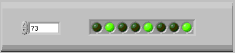
In diagrama bloc se obserfa folosirea functiei "Number to Boolean Array" din Programming-->Boolean si
"Reverse 1D Array" din Programming-->Array pentru a afisa tabloul in ordine inversa intr-un control de tip "Array"
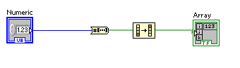
In urmatorul exemplu op_biti_v1_02 , se presupune ca avem conectate 8
leduri la portul paralel LPT0 conectat la adresa 888 sau 378H.
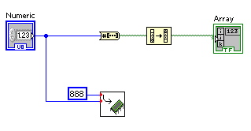
Dupa cum se observa numarul afisat digital prin intermediul ledurilor este trimis si functiei "OutPort" aflata in grupul
Connectivity-->PortI/O-->Out Port.
Ledurile conectate la portul paralel se aprind simultan cu ledurile pozitionate pe panoul frontal.
Urmatorul exemplu op_biti_v2 , modifica aplicatia anterioara, introducand un
generator de numere aleatoare in vederea aprinderii aleatoare a celor 8 leduri daca aplicatia este rulata continu.
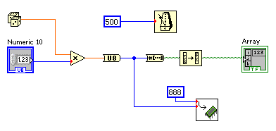
Numarul aleator are valori intre subunitare deci trebuie inmultit cu 255 pentru a obtine un numar aleator intre 0 si 255.
Numarul obtinut este de tip double deci trebuie convertit in U8 prin intrtmediul functiei "Convert to Unsigned Byte Integer" aflata in grupul
Programming-->Numeric-->Conversion.
Conversia binar - zecimal
Sa realizam acum aplicatia op_biti_v6 care transforma un numar binar 8 biti intr-un nr
numar zecimal. Valorile bitilor sunt introduse prin intermediul unor chei de tipul celor din imaginea urmatoare:
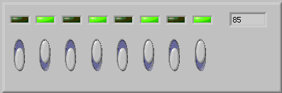
Conversia s-a realizat prin inmultiri cu ponderile corespunzatoare ale lui 2.
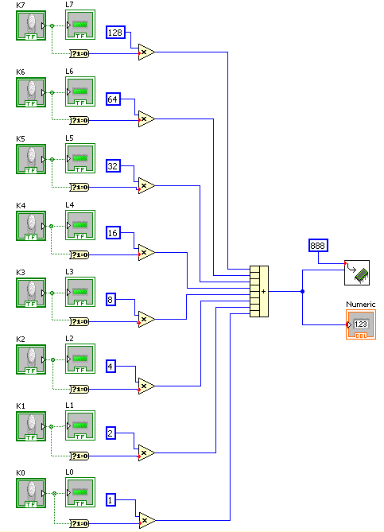
Valoarea obtinuta este afisata utilizand un control numeric, si trimisa totodata portului paralel in ideea ca exista
acolo un afisor pe leduri pentru a putea fi confruntata combinatia ledurilor aprinsa cu cea de pe ecran.
Diagrama bloc de sus este destul de complicata si vom utiliza pentru urmatoarele aplicatii o diagrama bloc mai simpla
op_biti_v6_01 bazata pe utilizarea tablourilor. In aceasta aplicatie, se utilizeaza un tablou de
comutatoare si un tablou de leduri iar conversia se realizeaza folosind functia "Boolean Array To Number" aflata in grupul Programming-->Numeric-->Conversion.
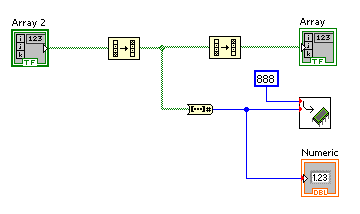
Rotatii
Una din cele mai utilizate operatii pe biti este operatia de shift-are. Este o operatie care deplaseaza spre stanga sau
spre dreapta bitii corespunzatori unui numar. O deplasare spre stanga cu o pozitie, este echivalenta cu o inmultire cu 2 iar o deplasare spre dreapta
cu o pozitie este echiovalenta cu o impartire cu 2. Urmatoarea aplicatie op_biti_v3 realizeaza shift-area spre stanga cu n pozitii.
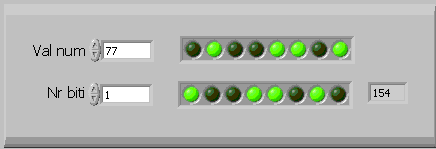
Pentru shift-are stanga s-a folosit functia Programming-->Numeric-->Data Manipulation
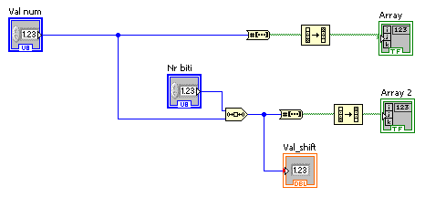
Dupa cum se observa in aplicatia anterioara, toti bitii sunt deplasati spre dreapta cu o pozitie, iar pe prima pozitie se pune 0
Exista instructiuni de shift-are stanga sau dreapta in cate putem controla valoarea bitului inscris pe prima respectiv
ultima pozitie. Urmatoarea aplicatie op_biti_v4 realizeaza o rotire dreapta.
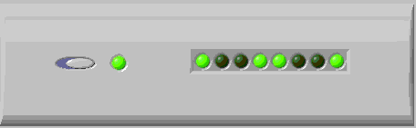
Se utilizeaza functia pentru rotire dreapta cu carry "Rotate Right With Carry" aflata tot in grupul Programming-->Numeric-->Data Manipulation.
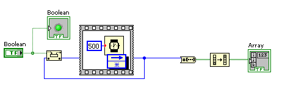
Pornind de la aplicatia anterioara se realizeaza rmatoarea aplicatie op_biti_v5 si se
realizeaza o rotire spre stanga prin carry utilizand de data aceasta "Rotate Left With Carry"
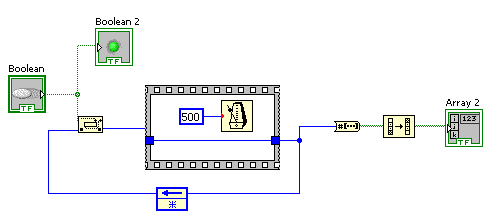
Functii logice
Bazandu-ne pe versiunea simplificata de conversie din binar in zecimal, sa realizam aplicatia urmatoare
op_biti_v7 pentru a utiliza functia logica AND.
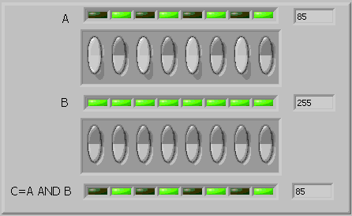
Functia logica AND se gaseste in grupul Programming-->Boolean
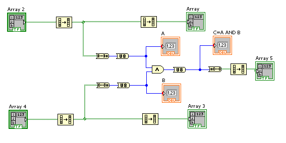
Dupa ce s-au convertit in zecimal cele doua numere (A, B), asupra lor s-a aplicat functia AND. Rezultatul a fost afisat sub forma
zecimala cat si binar sub forma de leduri. Pentru o corecta conversie, dupa realizarea functiei logice SAU, s-a convertit numarul zecimal obtinut int-un numar
intreg fara semn pe 8 biti. Functia AND este folosita deseori pentru validarea anumitor biti. Se construieste o masca de biti (operandul B) si se seteaza cu 1
pozitiile care trebuiesc validate din operandul A. Dupa aplicarea functiei AND, la iesire, apar numai bitii validati prin masca (operandul B). In exemplul de sus
tori bitii operandului B au fost setati la 1 deci in rezultatul final vor fi validati toti bitii operandului A.
In cazul in care se doreste setarea la 1 a anumitor biti din operandul A, se foloseste functia logica OR, operatie
exemplificata in aplicatia op_biti_v8 .
Functia logica OR se gaseste in grupul Programming-->Boolean
Dupa aplicarea functiei OR, la iesire, sun setati toti bitii corespunzatori operandului B.
In cazul in care se doreste schimbarea setarii anumitor biti din operandul A, se foloseste functia logica XOR, operatie
exemplificata in aplicatia op_biti_v9 .
Functia logica XOR se gaseste in grupul Programming-->Boolean
Dupa aplicarea functiei XOR, la iesire, sun inversati toti bitii corespunzatori operandului B.
Operatii relationale
De multe ori avem nevoie sa comparam doua marimi intre ele. Se cunosc o serie de opreatori care ne permit ca comparam doua
marimi, cum ar fi:
Operator
Semnificatie
>
Mai mare
<
Mai mic
>=
Mai mare sau egal
<=
Mai mic sau egal
==
Egal
!=
Diferit
O instructiune cu doi operanzi si un operator relational intre ei se numeste expresie relationala. Rezultatul unei
expresii relationale este o valoare bool-eana care poate lua deci doua valori: true sau false
In LabVIEW exista o serie de functii grupate in Programming-->Comparison care pot fi folosite in expresii relationale.
Comparatorul egal
Utilizand operatii relationale, sa realizam o aplicatie op_rel_v1 in
care avand un control numeric si un control boolean de tip led, sa activam ledul cand controlul numeric selecteaza un numar 7.
Se va folosi operatorul relational "Equal".
Sa extindem aplicatia anterioara obtinand op_rel_v2 in care avem
10 leduri care se vor aprinde in concordanta cu numarul selectat de controlul numeric.
Vom folosi deci 10 operatori relationali de egalitate.
Pentru a afisa valoarea in zecimal trebuie sa transformam numarul in binar obtinut intr-un numar zecimal, inmultind
fiecare bit cu 2 la puterea corespunzatoare rangului bitului. Sa realizam deci o aplicatie op_rel_v3
in care se activeaza ledul corespunzator numaruli intre 0-7 selectat de la controlul numeric. Avand in vedere ca sunt 8 biti corespunzatori celor
8 leduri, sa transformam combinatia de biti intr-un numar zecimal.
Numarul in zecimal se obtine prin insumarea puterilor corespunzatoare ale lui 2.
Pentru a putea inmulti valoarea booleana a bitului cu puterilor corespunzatoare ale lui 2 trebuie utilizata functia
:Boolean To (0,1) pentru a converti valoarea booleana intr-o valoare zecimala.
Alti operatori
Vom folosi in continuare operatorul relational "Greater Or Equal" pentru a activa un led pentru orce valoare mai mare
sau egala cu 7 de exemplu op_rel_v4 .
Ledul va fi deci activat pentru orce valoare > sau = cu 7
Bazandu-ne pe aplicatia anterioara si folosind 10 leduri, obtinem aplicatia
op_rel_v5
In diagrama bloc vor fi folosite desigur 10 operatori relationali de tipul "Greater Or Equal"
Vom relua aplicatia anterioara realizand aplicatia op_rel_v5 in care
vom folosi numai 8 leduri si vom converti combinatia de biti intr-un nr U8 pentru a putea fi afisat sub forma zecimala si trimis totodata la portul
paralel pentru a aprinde combinatia de leduir similara cu cea afisata pe ecran.